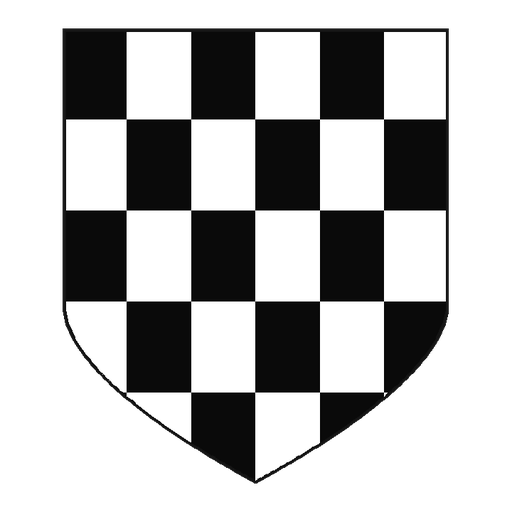

Jugar a escacs online gratis en català
Juga una partida d’escacs online a El Tauler contra Stockfish. El rival s’adapta al teu nivell, pots triar el ritme de joc i, en acabar, revisar la precisió, les errades i els moments clau de la partida.
- Escacs online gratis i en català
- Stockfish amb nivell adaptatiu segons el teu ELO
- Rellotge opcional: blitz, ràpid o clàssic
- Revisió de la partida amb precisió i errades
- Es pot començar a jugar sense registre